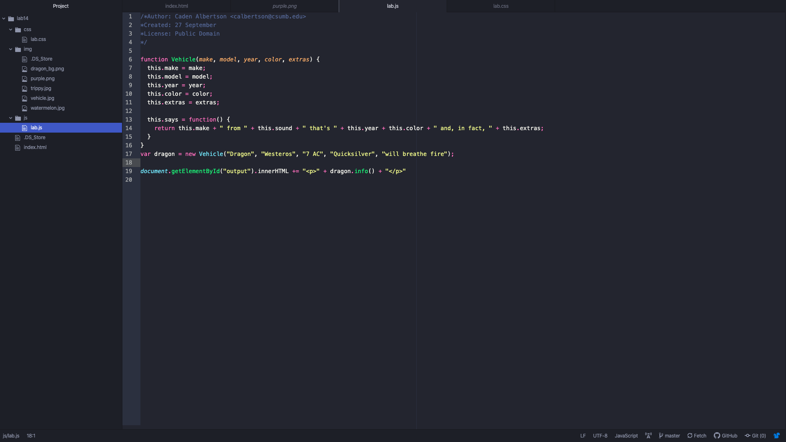

Lab 12: Javascript Classes and Objects
Challenges
This lab wasn't too challenging since we did an animal version of it, I'll admit I did it very slowly, in class on Monday.
Results
An html index, a function that can create and automatically add attributes to a human object of your choosing.
This is the Javascript coding in atom.

Script Output
"I don't own a car and am still learning to drive, so I substituted a car vehicle for a dragon that I wish I could ride. Also I'm sorry and not sorry for not taking this as seriously."